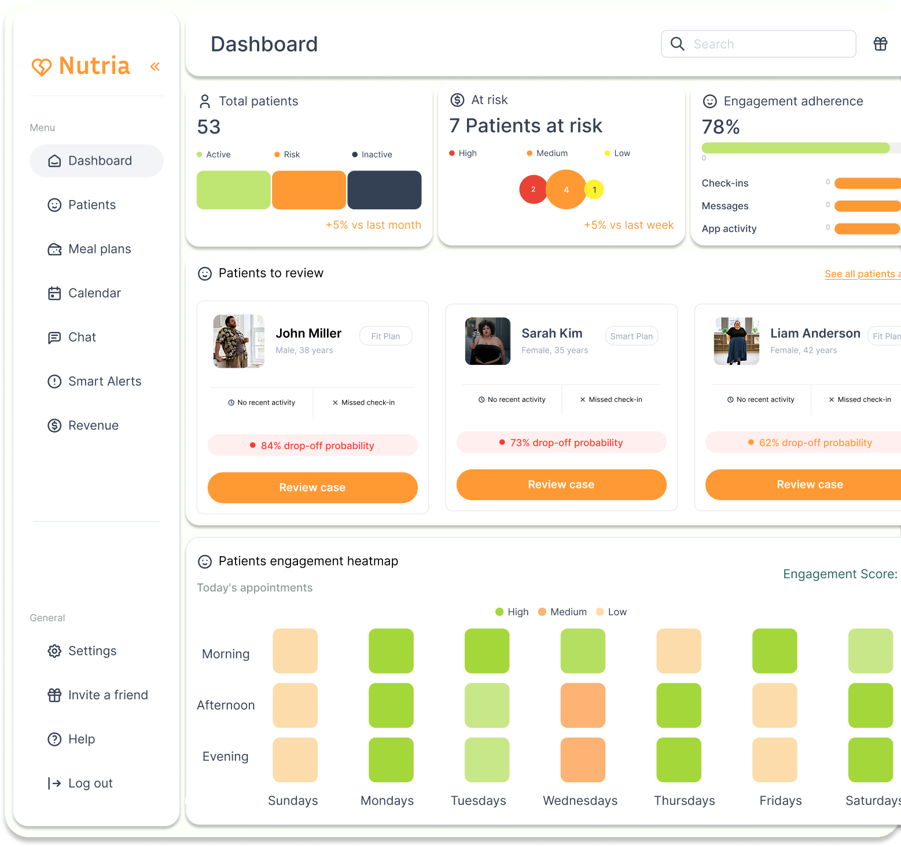
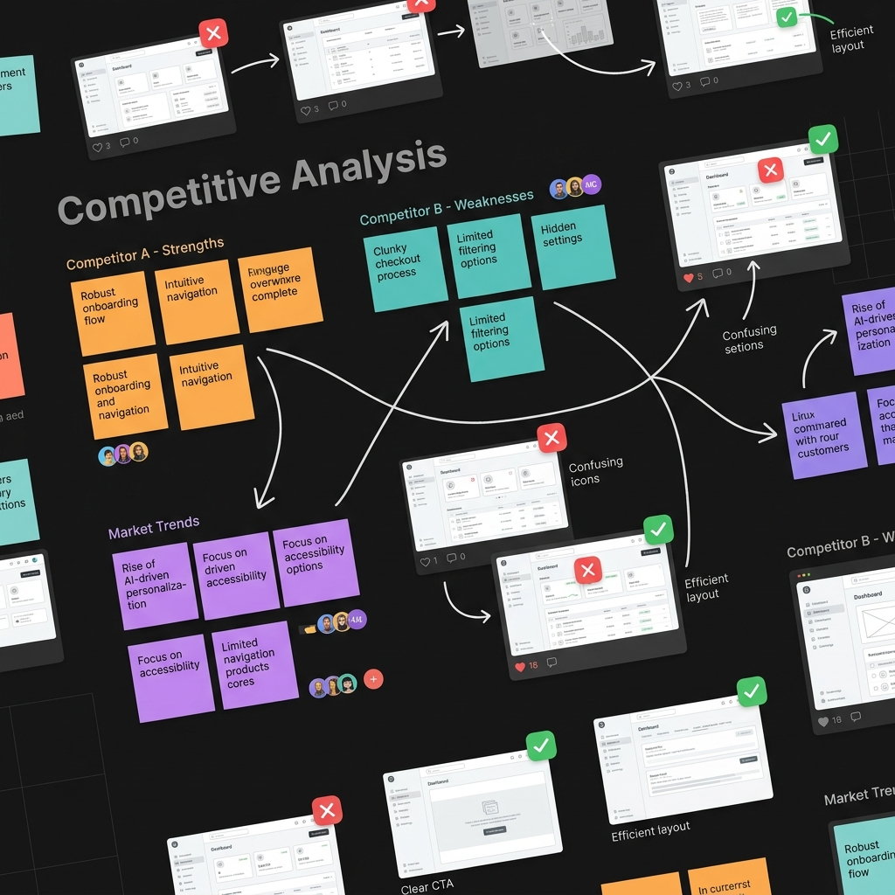

UX/UI Case Study
What if churn
didn't have to
be a surprise?
A retention-focused dashboard concept built to turn vague behavioral signals into earlier, clearer intervention.

Problem_
The retention problem wasn’t visible.
Independent nutritionists had tools for care delivery — but not for identifying who was quietly slipping away.
Fragmented signals
Missed check-ins and low engagement clues are buried deep within complex clinical records.
Reactive follow-up
Without structured risk alerts, practitioners reach out only after the patient has already dropped off.
No retention visibility
Tooling optimizes for building meal plans, effectively ignoring the lifecycle phase of keeping patients engaged.
Revenue instability
The 20-30% silent drop-off directly damages scaling efforts and the financial health of independent clinics.
When churn is invisible,
intervention happens too late.
Research & Thinking_
Turning invisible signals into clear decisions
I started by understanding how independent nutritionists already manage engagement and retention. I had a real conversation with a practicing nutritionist and analyzed 10+ health platforms to map behavioral signals and test information hierarchies.
01. Benchmarking Analysis
I focused on how other platforms surface signals, prioritize patients, and support action rather than just copying layouts.
Most tools support tracking patient data, but rarely surface clear risk signals for retention.
Business-level visibility (revenue, retention risk, recurrence) is often missing from nutrition platforms.
Alerts are usually notifications, not prioritization layers — users still have to interpret what’s urgent.
Retention is often managed through intuition and manual follow‑ups, not structured visibility.
A visual placeholder for my benchmarking analysis (matrix of 6–8 platforms).
02. Mapping Visibility Gaps
Combined nutritionist interviews with behavioral signal analysis to define what actually enables a retention decision.

A mapping of visibility gaps and behavioral signal analysis via Miro.
Metrics without meaning
Tools already show numbers — but they don’t explain why a patient is at risk. The dashboard needed to add context to the data.
Fast scanning, high stakes
Nutritionists scan dashboards in under 30 seconds. The IA must answer: What’s urgent? Why? What’s next?
Retention is behavior first
Retention is often managed through intuition and manual follow‑ups, not structured visibility. I focused on making disengagement patterns visible first.
Instead of treating this as a generic analytics screen, I treated it as a **decision space**: what should a nutritionist see first, what should they ignore, and what should they act on.
UX Direction & Principles
A dashboard isn’t a report — it’s a decision engine. Instead of showing more data, I focused on making it easier to understand what’s happening, what needs action, and what can be ignored.
Engine
How the dashboard is structured around three decision layers.
Awareness – What’s happening now?
Prioritized a high‑level health snapshot instead of deep analytics. The overview shows what’s changing across the patient base at a glance.
Prioritization – What needs action first?
Organized patients by risk level and key signals so nutritionists can quickly decide who to attend to first.
Insight/Action – Why, and how to respond?
Combined behavioral signals with suggested actions, turning vague risk into concrete next steps.
Instead of designing for more data, I designed for faster decisions — narrowing the scope to retention, simplifying signals to a core set, and using AI‑assisted actions to reduce cognitive load.
How I approached the problem
To shape this decision‑oriented dashboard, I first mapped how nutritionists experience visibility gaps, how the market solves the problem today, and which signals actually lead to action.
Mapping visibility gaps
I started by understanding where nutritionists were losing visibility — not just in patient management, but in retention, engagement, and revenue risk. The goal was to see where intuition was filling the gap.
Analyzing the market
I reviewed existing nutrition platforms to identify what is already supported well — like meal plans and scheduling — and what remains invisible, especially around retention and business‑level decisions.
Defining signals that drive action
Instead of treating the dashboard as a reporting tool, I focused on which behavioral patterns and risk indicators actually matter for decisions — like inactivity, missed check‑ins, and adherence drops.
From insight to product flow
With these insights, I structured the experience around clarity and prioritization, then moved into interface design, dashboard logic, and AI‑assisted alert patterns to create a testable churn prevention flow.
Below, this thinking is translated into the information architecture and screens that follow.
Information Architecture: The Core System
IA is the project’s heart — turning chaos into clarity. The dashboard is designed as a layered flow that moves users from awareness to action with minimal friction.
Layered flow: Awareness → Prioritization → Insight/Action
Layer 1 – Awareness
The dashboard shows a high‑signal health snapshot — total patients, % at risk, and adherence trends — so users can get a ‘pulse check’ in under 5 seconds. Cards stack by urgency.
Layer 2 – Prioritization
A triage list of at‑risk patients, with risk score, key signal (e.g., ‘7d inactivity’), and suggested action. This reduces the number of patients to review from 100+ down to a handful.
Layer 3 – Insight/Action
The patient profile drills into behavior over time, with a timeline, AI‑assisted explanations, and one‑tap actions like sending a message, scheduling a call, or adjusting a plan.
This layered IA keeps 80% of decisions in the first two layers, only escalating to deeper context when truly needed.
Design System: Translating Figma to Code
To ensure a seamless handoff and maintain a living design system, I asked Claude Code to translate the design from Figma directly into this document. This process included building custom design tokens, defining a cohesive color palette, and structuring modular components that power the entire product experience.
How this translated into the interface
The solution was designed as a guided decision flow — helping nutritionists move from awareness to action before patient churn becomes visible too late.
Rather than building a dashboard around passive reporting, I focused on structuring the experience around one key task:
"Identify a patient at risk and take the right retention action early enough to make a difference."
This meant designing not just isolated screens, but a workflow that could support:
- Early signal detection
- Prioritization
- Patient-level understanding
- Fast, low-friction intervention
1. Core User Flow
Primary Path
Home Dashboard → Smart Alerts → Patient Profile → Follow-up Decision
Secondary Path
Home Dashboard → Flagged patient card → Patient Profile. Allows users to jump directly into a flagged profile when they already know where they want to investigate.
“What needs my attention today?”
The dashboard was designed to give a quick, high-signal overview of what is happening across the nutritionist’s patient base — without overwhelming them with unnecessary analytics.
Rather than centering the experience around general business reporting, I prioritized the information that could support daily retention awareness and action readiness.
- total patients
- number of patients at risk
- overall program adherence
- smart alerts
- today’s appointments
- patient engagement patterns
The layout was intentionally structured to answer: What is the current health of my patient base? Who might need attention right now? Where should I look first?
It was designed as a decision-entry point — helping the user spot possible retention issues early and move into investigation with less friction.
“Which patients are showing early churn signals, and what should I review next?”
The Smart Alerts screen was designed to turn passive signals into actionable risk visibility. Instead of traditional notifications, it acts as a prioritization layer.
This screen groups at-risk patients based on behavioral patterns such as inactivity, adherence drop, and plan renewal risk.
- risk level & risk score
- key signal
- last seen activity
- suggested action
This structure helps frame: who needs attention now — and why. This is where the workflow shifts from awareness into focused decision-making.
“What’s going on with this patient, and what should I do?”
The patient profile supports the transition from risk visibility to action clarity. Instead of only showing a churn score, it explains what's driving the risk.
The experience highlights specific behaviors contributing to risk, making it explainable rather than abstract:
- check-in inactivity
- reduced message activity
- adherence drop
- app inactivity
- progress plateau
This screen is designed to answer: What changed? How serious is it? What kind of intervention makes sense now?
“How should I follow up?”
Once a patient is identified as at risk, the experience supports immediate intervention, reducing the gap between noticing a problem and actually responding.
The system suggests context-aware interventions based on the behavior identified:
- Low engagement → send a message
- Missed check-ins → schedule follow-up
- Adherence drop → adjust plan
The modal supports fast, personal, and lightweight outreach while keeping the final decision in the hands of the nutritionist.
“I acted — what happens now?”
The final part of the flow closes the loop. Once an action is taken, the system confirms the intervention while keeping the case visible for continued monitoring.
This confirmation layer reinforces that the action was sent and that the patient is now in an active follow-up state.
Retention isn't solved by one action alone; this step ensures the nutritionist can act quickly, log the intervention, and track re-engagement signals over time.
How success would be measured
The design was intentionally built to improve how quickly and clearly nutritionists can detect risk and act on it. If this were implemented, success would be measured across three layers:
Visibility
Are users noticing risk earlier?
- % of at-risk patients viewed before churn
- Time to identify a flagged patient
- Dashboard-to-alert click-through rate
- Number of flagged patients reviewed per week
Awareness is the first goal. If users aren’t seeing risk signals early enough, the rest of the flow doesn’t matter.
Actionability
Are users actually taking action once risk is surfaced?
- Alert-to-profile click-through rate
- % of flagged patients receiving follow-up action
- Time from alert to intervention
- Use rate of recommended actions
The core value is helping users respond before churn happens. If users see alerts but don’t act, the workflow is failing.
Retention Impact
Does earlier visibility lead to better retention?
- Retention rate of flagged patients after intervention
- Recovery rate of at-risk patients
- Plan renewal rate
- Revenue recovered from at-risk patients
This is business impact. The long-term success depends on whether earlier intervention actually reduces avoidable churn.
What I would expect to improve
If the workflow is working well, I’d expect to see improvements in:
- Earlier identification of disengagement patterns
- Faster follow-up response time
- More consistent intervention behavior
- Better visibility into retention risk
- Stronger recovery of patients who might otherwise drop off
"More than anything, I’d expect the product to shift the nutritionist’s workflow from reacting late to acting earlier with more confidence."
Reflection
What improved, what I’d test next, and what I learned.
This project started as a product gap — independent nutritionists lacked visibility into retention risk — but it quickly became a design exercise in **decision‑making**, not just interface design.
What made it interesting wasn’t building another dashboard, but turning vague behavioral patterns into something nutritionists could actually understand and act on. The challenge was designing around a single core task: “How might a nutritionist identify early disengagement and intervene before a patient disappears?”
The biggest shift was moving away from “show more data” and toward three questions: What should be visible first? What actually helps the user decide? What deserves action — versus just attention? That changed how I approached the product: instead of starting from screens, I started from the retention task, then shaped the IA, flow, and UI around it.
If I were to continue this project, I’d test whether the alert hierarchy actually reduces decision time, how consistently nutritionists act on recommendations, and if the AI‑assisted explanations add clarity or create overconfidence. More than anything, this project strengthened my ability to design systems that turn invisible signals into clear decisions — a skill that will be even more valuable in SaaS and healthcare products abroad.